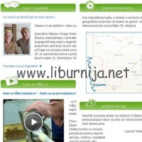
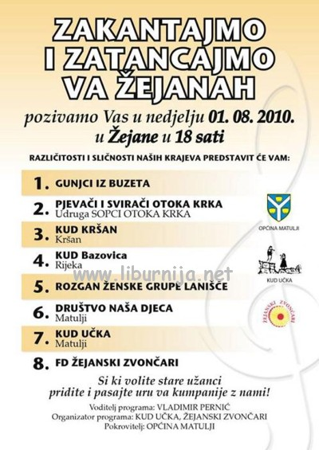

 Žejane – Zilele de vlåška ali žejånska limba 2010. u prijevodu Dani vlaškog ili žejanskog jezika 2010. održat će se 31.srpnja i 1.kolovoza, pod pokroviteljstvom općine Matulji.
U prostorijama područne škole Šušnjevica / Šušnjevicę u subotu, 31. srpnja 2010. održat će se slijedeći program:
10:00-12:00 Radionica o audio i video dokumentiranju
13:00-15:00 Radionica o pisanju na vlaškom ili žejanskom jeziku
15:15-15:30 Dječji igrokaz Juva popâru kręšte (Gdje raste papar)
Još bogatiji i raznovrsniji program očekuje nas i u nedjelju, 1. kolovoz 2010. u prostorijama područne škole Žejane / Žejân.
10:00-12:00 Radionica o audio i video dokumentiranju
13:00-15:00 Radionica o pisanju na vlaškom ili žejanskom jeziku
15:15-15:30 Dječji igrokaz Juva popâru kręšte (Gdje raste papar)
15:45-16:15 Predavanje o žejanskoj prošlosti
U organizaciji Folklornog društva Žejanskih zvončara i KUD-a Učka u 18 sati održat će se program pod nazivom Zatancajmo i zakantajmo va Žejanah gdje će nastupiti Gunjci iz Buzeta, pjevači i svirači otoka Raba, Udruga sopci otoka Krka, KUD Kršan- kršan, KUD Bazovica iz Rijeke, Rozgan ženske grupe Lanišće, Društvo naša djeca, KUD Učka iz Matulji i Folklorno društvo Žejanskih zvončara, a kroz program će nas voditi Vladimir Pernić.

Prijave na Audio i video radionicu traju do danas, 30.srpnja, a za sve ostale informacije možete se obratiti Viviani Brkarić na 091 534 1900 i Robertu Doričiću na 091 252 8421.
Skup se izvodi u sklopu projekta Očuvanja vlaškog ili žejanskog jezika, a ako i vi želite naučiti nešto o Žejanskom jeziku kao i o kulturi, obavezno posjetite Internet stranicu www.vlaski-zejanski.com.
Na rem vedę! Vidimo se!
Serena Calderara
July 30, 2010
© 2010 Liburnija